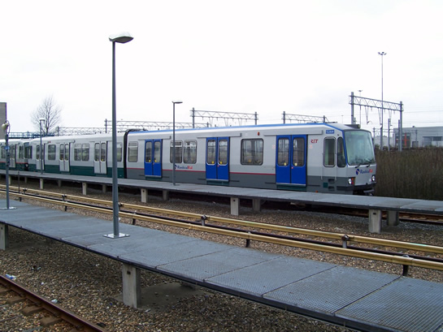

RandstadRail-rijtuigen worden realiteit en ander nieuws...
- vrijdag 05 december 2008 16:07
- Geschreven door Joachim
De ombouw van de elf rijtuigen Type T (5261-5271), welke dienst gaan doen op het RandstadRail-tracé, vordert gestaag. Een groot deel van de rijtuigen is inmiddels aangepast aan het spoorbeveiligingsysteem dat gebruikt wordt op het nieuwe tracé. Hiervoor hebben de metrosneltrams aan elke bak één treinkoppelspoel gekregen, welke signalen van en naar het spoorbeveligingsysteem ontvangt en verzendt.
Inmiddels is ook begonnen met het cosmetisch veranderen van de rijtuigen. De rijtuigen krijgen een andere outfit, min of meer gelijk aan die van rijtuig 5264, welke als het ware functioneerde als mock-up. De 5261 werd vandaag gereed gemaakt voor de cosmetische veranderingen. In de werkplaats van remise 's-Gravenweg werd het rijtuig onder meer ontdaan van het gele metrologo op de voorzijde, evenals de rode bies. Ook de bumper werd zwart gelakt.
Rijtuig 5261, gereed voor vertrek naar remise Waalhaven en cosmetische ombouw voor RandstadRail. De bumper is zwart gelakt.

Rijtuig 5264 op spoor 121 van emplacement Waalhaven. Een rode bies werd als test toegevoegd. Ook hier is de bumper zwart gelakt.
Vandalen opgepakt
Vanmiddag werden omstreeks 15.30 uur drie vandalen opgepakt op station Kralingse Zoom voor het spuiten van graffiti in metrorijtuig 5230. De politie en RET werden getipt door een reiziger. Wagendienst 577 moest uitwijken naar station Kralingse Zoom spoor 4 en bleef op de kop van het perron zo'n twintig minuten wachten tot de politie arriveerde. Even later werden er drie jongeren geboeid afgevoerd door de politie. De combinatie metrorijtuigen is buiten dienst genomen vanaf spoor 4.
Wagendienst 577 richting Nesselande wacht op Kralingse Zoom perronspoor 4 tot er politie aanwezig is.
Vanaf perronspoor 4 gaat wagendienst 577 (op kop rijtuig 5230) buiten dienst richting remise 's-Gravenweg.
Marathon
Aanstaande zondag vindt de jaarlijkse Fortis Marathon Rotterdam plaats. Dit evenement brengt veel drukte met zich mee, evenals omleidingen voor tram en bus. Er wordt daarom komende zondag ook meer (metro)materieel ingezet dan doorgaans. Bezoekers en renners van de Marathon worden geadviseerd zoveel mogelijk gebruik te maken van het openbaar vervoer en dan met name de metro. Omleidingen en wijzigingen voor bus en tram zijn te vinden op de website van de RET.
Inzet 5300-materieel Calandlijn
Na de inzet van de 5310, 5347 en 5357 op de Calandlijn, ter opvang van materieeltekort op deze lijn, werden op 27 maart de 5328, 5330 en 5333 ingezet. De 5310, 5347 en 5357 keerden terug naar de Erasmuslijn. Dit echter tot vandaag: de 5328, 5330 en 5333 zijn inmiddels teruggekeerd naar de Erasmuslijn, de 5310, 5347 en 5357 doen vanaf nu weer dienst op een van de wagendiensten op het metrotracé tussen Spijkenisse (De Akkers) en Capelle a/d IJssel (De Terp) v.v.
Werkzaamheden Hemelvaartweekeinde
De werkzaamheden aan de wisselcomplexen Waalhaven I en Waalhaven II, gepland in het Hemelvaartweekeinde (25 t/m 28 mei), gaan niet door en zijn voor onbepaalde tijd uitgesteld. Reden zijn de te hoog uitgevallen kosten voor de vervanging van de wisselcomplexen.
Ballastwagens
Op 27 maart werden de twee overige ballastwagens afgeleverd op het werkemplacement 's-Gravenweg (spoor 371). De ballastwagens 7303 en 7304 zijn in de Centrale Werkplaats Kleiweg gereviseerd, dit in het kader van een algehele revisie van het onderhoudsmaterieel van het metrobedrijf. Inmiddels verblijft locomotief 6001 ook aan de Centrale Werkplaats, voor een revisie.
Een van de ballastwagens op spoor 371 van het werkemplacement 's-Gravenweg.
 Bekijk nieuwsitem transport ballastwagens 7301/7302
Bekijk nieuwsitem transport ballastwagens 7301/7302
Aanrijding met stootjuk
Twee weken geleden heeft een rijtuig Type T een aanrijding gemaakt met het stootjuk van parkeerspoor 4, ten westen van station De Akkers in Spijkenisse. De aanrijding gebeurde rond 01.00 uur, tijdens het inrukken van het materieel.
De ATB (Automatische Trein Beïnvloeding) grijpt in dit geval in bij het passeren van de laatste ATB-pot. Omdat er gekoppeld moet worden met het stootjuk (i.v.m. luchtvoorziening) mag deze laatste ATB-pot gepasseerd worden met een signalering van 0 absoluut passief. Een metrotrein zal zichzelf stilzetten na het passeren van een ATB-pot met deze signalering. Na uit- en inschakelen van het metrorijtuig zal een signalering van 0 permissief (max. 10 km/h) terugkomen, waardoor het mogelijk is door te rijden naar, in dit geval, het stootjuk en hiermee te koppelen. De oorzaak van de aanrijding met het stootjuk is onduidelijk.
Waarschijnlijk is rijtuig 5208 in aanrijding gekomen met het stootjuk. Deze trein mist op dit moment een element van de bumper aan de A-bak, vermoedelijk veroorzaakt door de aanrijding met het stootjuk.
Rechts het aangereden stootjuk van parkeerspoor 4.
Centraal Station
Op het Centraal Station is inmiddels een nieuwe toegang geopend, recht voor het RET Verkoop & Informatiepunt. De toegang komt uit exact voor de Verkoop&Oplaadautomaten t.b.v. de OV-Chipkaart. Een volgend nieuwsitem zal wederom nieuwe foto's bevatten van de bouwwerkzaamheden rond het Centraal Station, in het kader van RandstadRail en het nieuw te realiseren Rotterdam Centraal.